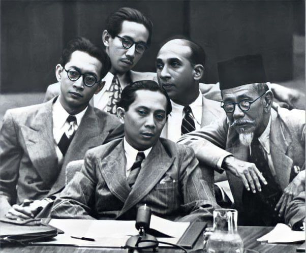

01

MASA KERAJAAN
Kerajaan Nusantara
Pelajari kerajaan Hindu-Buddha dan Islam yang pernah berkembang di Nusantara.
ARSIP PENGETAHUAN INDONESIA / 004
Tentukan materi yang ingin kamu pelajari. Baca materi pembelajaran terlebih dahulu, kemudian uji pemahamanmu melalui kuis.
DAFTAR MATERI
MASA KERAJAAN
Pelajari kerajaan Hindu-Buddha dan Islam yang pernah berkembang di Nusantara.

MASA KOLONIAL
Kenali perjalanan bangsa Indonesia selama masa kolonialisme dan perlawanan rakyat.

TAHUN 1945
Pelajari peristiwa penting menjelang dan setelah Proklamasi Kemerdekaan.

TOKOH BANGSA
Kenali tokoh-tokoh yang berperan dalam perjalanan sejarah Indonesia.
INFORMASI
Pelajari materi melalui presentasi yang tersedia. Setelah selesai belajar, pilih Mulai Kuis untuk menguji pengetahuanmu tentang sejarah Indonesia.